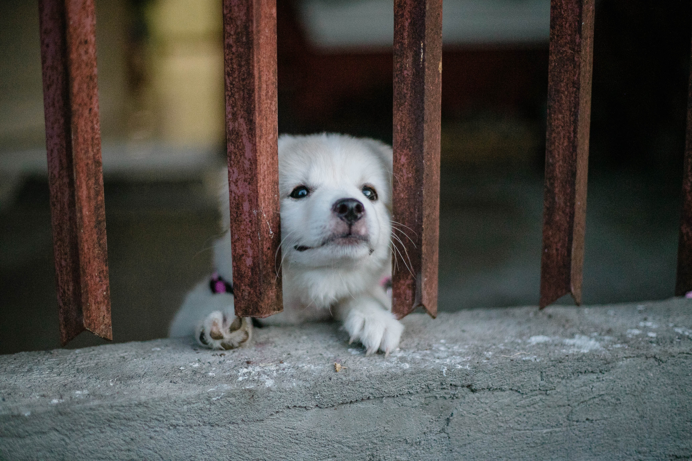
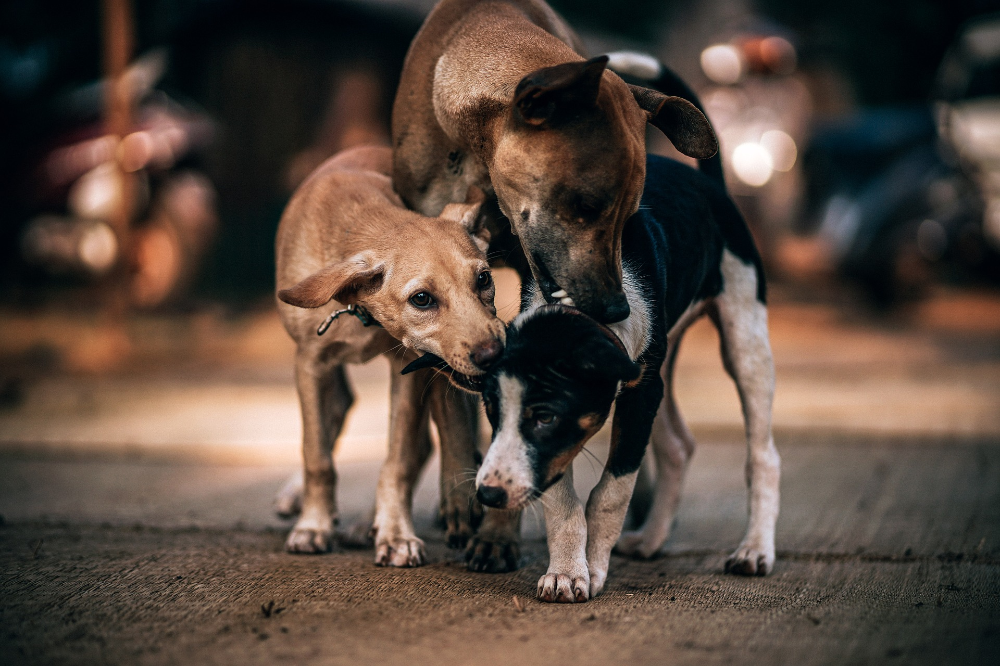
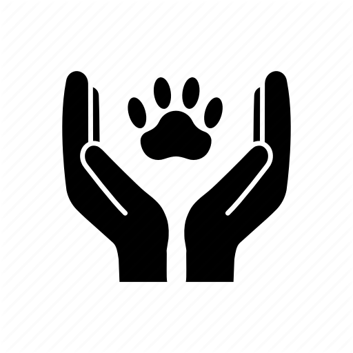

How can you help?
As a non-profit organization, the VOSD depends entirely on donations from kindhearted people like you.
Donate
No amount is too small. It goes a long way to help animals at the rehab centre
Volunteer
A few hours a week with the animals means the world to them, the memories that stay with you for a lifetime.

Adopt
Don't buy or breed animals while there are many animals deprived of a good home. Come visit us & you might just meet your soulmate
.png)
Donate Food
All they want is food ,care and some love. Feed a stray dog, today!
Stray dogs are often seen on the streets of India. These voiceless
creatures are reliant on the scraps given by the passersby,
restaurants, and so on. In the present scenario, hundreds of cafes,
restaurants, bakeries, shops, and establishments have been shut down.
These strays were already living in horrible conditions and had to
survive on scraps.The virus has locked people inside their homes,
caused the death of thousands of individuals and is now hurting
animals. These furry four-legged creatures are suffering as the
lockdown has left them wandering on the streets for food.
Donate For Stray Dogs
Show that you CARE!
If you can’t donate for hundreds, donate for ONE! BIG or SMALL, your every contribution goes directly into save lives of many homeless Stray Dogs
Your Donation for Stray Dogs can change their lives forever.
Every single penny contributed helps in rescuing homeless injured and abandoned stray dogs.